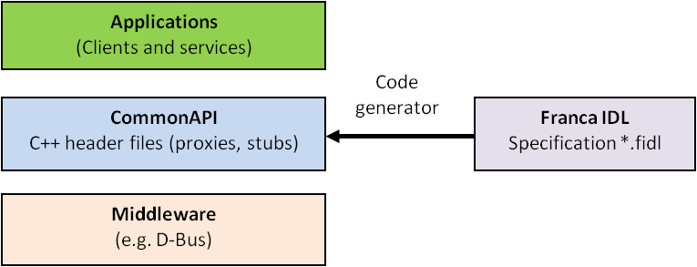
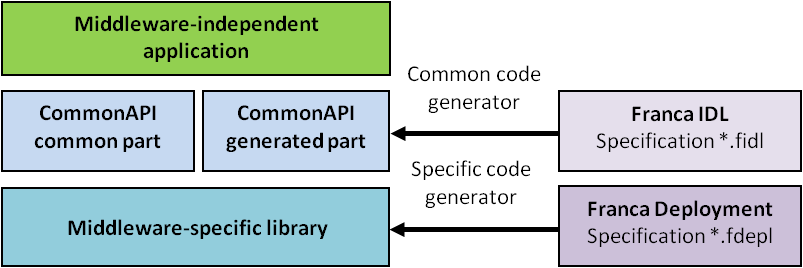
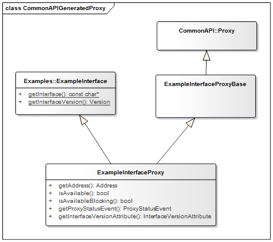
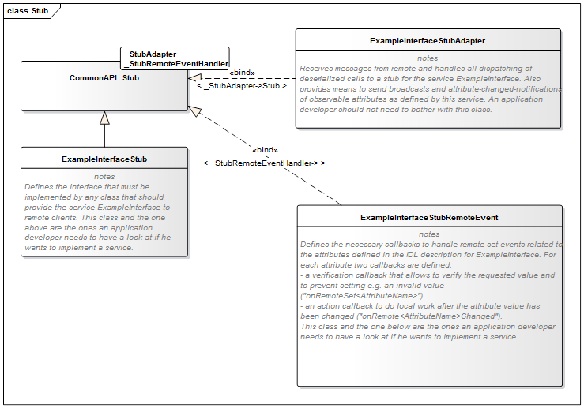

<<<<<<< HEAD
=======
>>>>>>> deea47cf89d131b1e485d970e83094a877a2405e
CommonAPI C++ Specification
<<<<<<< HEAD
This is the specification for Common API released at 13. May 2022.
=======
This is the specification for Common API released at 13. 5月 2022.
>>>>>>> deea47cf89d131b1e485d970e83094a877a2405e
IPC Common API is a C++ abstraction framework for Interprocess Communication (IPC). It is supposed to be neutral to IPC implementations and therefore can be used with any kind of IPC mechanism if a middleware specific IPC Common API binding is provided.
IPC Common API allows applications (i.e., clients and servers using C++) developed against IPC Common API to be linked with different IPC Common API backends without any changes to the application code. Thus, components which have been developed for a system which uses specific IPC X could be deployed for another system which uses IPC Y easily - just by exchanging the IPC Common API backend without recompiling the application code.
The actual interface definitions will be created using Franca IDL, which is the Common IDL solution favored by GENIVI.
General Design
Basic Assumptions
-
The applications use the client-server communication paradigm.
-
The C++ API is based on the common interface description language Franca IDL which provides the possibility to specify interfaces independent from the platform, middleware or programming language. That means that the application specific part of the API is generated via a code generator from a Franca IDL specification file (see figure 1).
-
CommonAPI specifies only an API and not an concrete IPC mechanism. It can only be used with a language binding that has to be developed for a special middleware.
-
In principle, the CommonAPI should be platform independent. However, this is without any restrictions very difficult to realize. Therefore it is agreed that CommonAPI attempts to use only features supported from the gnu C++ compiler version <= 4.4.2. Please find supported compiler and compiler versions in the NEWS file of the CommonAPI distribution.

Figure 1. Code Generation from Franca IDL
Deployment
One problem with definition of a middleware-independent C++ API is that depending on the middleware different configuration parameters for parts of the API could be necessary. Examples:
The Franca IDL offers the possibility to specify these kind of parameters which depend on the used middleware in a middleware-specific or platform-specific deployment model (*.depl file). The deployment parameters can be specified arbitrarily.
But as indicated above it is an explicit goal that an application written against CommonAPI can be linked against different CommonAPI IPC backends without any changes to the application code. This goal brings an important implicit restriction:
|
|
The interface defined in Franca IDL is the only information that should be used to generate the CommonAPI headers that define the implementation API. Deployment models that are specific to the IPC backend must not affect the generated API. But a non specific deployment model is allowed. |

Figure 2. Deployment Concept
Basic Parts of CommonAPI
CommonAPI can be divided up into two parts:
-
The first part (Franca based part, generated by the CommonAPI code generator) refers to the variable (generated) part of the logical interface. That is the part of the interface which depends on the specifications in the Franca IDL file (data types, arrays, enumerations and interface basics as attributes, methods, callbacks, error handling, broadcast).
-
The second fixed part (CommonAPI Runtime features) which is mainly independent from the interface specifications. It refers to the CommonAPI library functions as service discovery, connect/disconnect, and address handling which relate primarily to the runtime environment provided by the underlying middleware. Furthermore this part contains common type definitions and base classes.
Franca based part
Namespaces
The namespace of the CommonAPI base functions is CommonAPI; the namespace of a CommonAPI application depends on the the qualified package name of the interface specification and of the interface version.
|
|
=======
package example.user
interface Test {
version { major 1 minor 0 }
}
CommonAPI C++
namespace v1_0 {
namespace example {
namespace user {
}
}
} |
>>>>>>> deea47cf89d131b1e485d970e83094a877a2405e
If the interface has no version the version dependent part in the C++ namespace is omitted.
Data Types
Primitive Types
The integer data types used by Common API are defined in stdint.h.
Table 1. Mapping Of Franca Primitive Types With CommonAPI C++ Types
| Franca Type Name |
CommonAPI C++ Type |
Notes |
UInt8
|
uint8_t
|
unsigned 8-bit integer (range 0..255). |
Int8
|
int8_t
|
signed 8-bit integer (range -128..127). |
UInt16
|
uint16_t
|
unsigned 16-bit integer (range 0..65535). |
Int16
|
int16_t
|
signed 16-bit integer (range -32768..32767). |
UInt32
|
uint32_t
|
unsigned 32-bit integer (range 0..4294967295). |
Int32
|
int32_t
|
signed 32-bit integer (range -2147483648..2147483647). |
UInt64
|
uint64_t
|
unsigned 64-bit integer. |
Int64
|
int64_t
|
signed 64-bit integer. |
Boolean
|
bool
|
boolean value, which can take one of two values: false or true. |
Float
|
float
|
floating point number (4 bytes, range +/- 3.4e +/- 38, ~7 digits). |
Double
|
double
|
double precision floating point number (8 bytes, range +/- 1.7e +/- 308, ~15 digits). |
String
|
std::string
|
character string. |
ByteBuffer
|
std::vector<uint8_t>
|
buffer of bytes (aka BLOB). |
Franca has only one string data type, and if necessary the wire format / encoding can be specified via deployment model. The proxies always expect and deliver UTF-8.
Arrays
Franca array types (in explicit and implicit notation) are mapped to std::vector<T>. While explicitly defined array types will be made available as typedef with the name as it was given in Franca IDL, the implicit version will just be generated as std::vector<T> wherever needed.
Structures
Franca struct types are mapped to C++ struct types. Example:
=======
struct TestStruct {
UInt16 uintValue
String stringValue
}
CommonAPI C++
struct TestStruct : CommonAPI::Struct<uint16_t, std::string> {
TestStruct() {
}
TestStruct(const uint16_t &_uintValue, const std::string &_stringValue) {
std::get\<0>(values_) = _uintValue;
std::get\<1>(values_) = _stringValue;
}
inline const uint16_t &getUintValue() const { return std::get\<0>(values_); }
inline void setUintValue(const uint16_t &_value) { std::get\<0>(values_) = _value; }
inline const std::string &getStringValue() const { return std::get\<1>(values_); }
inline void setStringValue(const std::string &_value) { std::get\<1>(values_) = _value; }
bool operator==(const TestStruct &_other) const;
inline bool operator!=(const TestStruct &_other) const {
return !((*this) == _other);
}
};
>>>>>>> deea47cf89d131b1e485d970e83094a877a2405e
Structures are mapped to a (generated) struct which inherits from CommonAPI::Struct. CommonAPI::Struct holds the structured data in a tuple. The generated class provides getter- and setter-methods for the structure members.
CommonAPI Struct base class (Struct.hpp):
CommonAPI C++
<<<<<<< HEAD
=======
template<typename... _Types>
struct Struct {
std::tuple<_Types...> values_;
};
>>>>>>> deea47cf89d131b1e485d970e83094a877a2405e
One problem is the possibility to inherit structures in Franca IDL. This feature is implemented by the code generator which generates the struct members of the base type into the extended type.
Polymorphic structs are mapped to an interface that is derived from the base class PolymorphicStruct and contain their parameter in a struct.
CommonAPI C++
<<<<<<< HEAD
=======
struct PolymorphicStruct {
virtual const Serial getSerial() const = 0;
};
>>>>>>> deea47cf89d131b1e485d970e83094a877a2405e
Enumerations
Franca enumerations will be mapped to C++ structs which inherit from the base class CommonAPI::Enumeration. The Enum backing datatype and wire format by default is uint8_t. If needed, the wire format can be specified by a CommonAPI deployment file (enumeration backing type).
=======
enumeration MyEnum {
E_UNKNOWN = "0x00"
}
enumeration MyEnumExtended extends MyEnum {
E_NEW = "0x01"
}
CommonAPI C++
struct MyEnum : CommonAPI::Enumeration<int8_t> {
MyEnum() = default;
MyEnum(const int8_t &_value)
: CommonAPI::Enumeration<int8_t>(_value) {}
static const int8_t E_UNKNOWN = 0;
};
struct MyEnumExtended : MyEnum {
MyEnumExtended() = default;
MyEnumExtended(const int8_t &_value)
: MyEnum(_value) {}
static const int8_t E_NEW = 1;
};
>>>>>>> deea47cf89d131b1e485d970e83094a877a2405e
|
|
In earlier versions of ComonAPI Franca enumerations were mapped to strongly typed C++11 enums. This was changed because CommonAPI needs for the new serialization/deserialization concept the possibility to cast CommonAPI enumerations implicitely to its base types. |
The neumeration base class looks like:
CommonAPI C++
<<<<<<< HEAD
=======
template <typename _Base>
struct Enumeration {
Enumeration() = default;
Enumeration(const _Base &_value)
: value_(_value) {
}
inline Enumeration &operator=(const _Base &_value) {
value_ = _value;
return (*this);
}
inline operator const _Base() const {
return value_;
}
inline bool operator == (const Enumeration<_Base> &_other) const {
return value_ == _other.value_;
}
inline bool operator != (const Enumeration<_Base> &_other) const {
return value_ != _other.value_;
}
__Base value__;
};
>>>>>>> deea47cf89d131b1e485d970e83094a877a2405e
Maps
For efficiency reasons the CommonAPI data type for Franca maps is std::unordered_map<K,V>.
|
|
=======
map MyMap {
UInt32 to String
}
CommonAPI C++
typedef std::unordered_map<uint32_t, std::string> MyMap; |
>>>>>>> deea47cf89d131b1e485d970e83094a877a2405e
Unions
Franca union types are implemented as a typedef of CommonAPI generic templated C++ variant class.
|
|
=======
union MyUnion {
UInt32 MyUInt
String MyString
}
CommonAPI C++
typedef Variant<uint32_t, std::string> MyUnion; |
>>>>>>> deea47cf89d131b1e485d970e83094a877a2405e
This uses a variadic template to define the possible options, and implements operators in the expected fashion.
Assignment works by constructor or assignment operator:
=======
MyUnion union = 5;
MyUnion stringUnion("my String");
>>>>>>> deea47cf89d131b1e485d970e83094a877a2405e
Getting the contained value is done via a get method templated to the type desired for type safety. This results in a compile error if an impossible type is attempted to be fetched. In case of fetching a type which can be contained but is not an exception is thrown. The choice of an exception at this point is made for the following reasons:
-
Returning pointers is inconvenient, especially in case of primitives.
-
Returning a temporary reference in case of failure is dangerous due to potential for segmentation faults in case of accidental use.
-
Returning a null heap object will be a memory leak if not deleted by the user.
Also available is an templated isType method to test for the contained type:
MyUnion union = 5;
int a = union.get<uint32_t>(); //Works!
std::string b = union.get<std::string>(); //Throws exception
Also available is an templated isType method to test for the contained type:
MyUnion union = 5;
bool contained = union.isType<uint32_t>(); //True!
contained = union.isType<std::string>(); //False!
>>>>>>> deea47cf89d131b1e485d970e83094a877a2405e
|
|
To enable comparisons between variants in an inheritance hierarchy comparators have to be generated for the C++ types, as C++ as all variants are instances of the same generic class. |
Type Aliases
Franca typedefs are mapped to C++ typedef.
Type Collections
In Franca a set of user-defined types can be defined as type collection. The name of the type collection, referred to as typecollectionname, can be empty. CommonAPI uses for empty type collection the default name Anonymous.
The CommonAPI code generator generates the header file Anonymous.hpp and creates a C++ struct for the type collection.
=======
package example.user
typeCollection {
typedef a is Int16
}
CommonAPI C++
namespace example {
namespace user {
struct __Anonymous__ {
typedef int16_t a;
static inline const char* getTypeCollectionName() {
static const char* typeCollectionName = "example.user.__Anonymous__";
return typeCollectionName;
}
}; // struct __Anonymous__
} // namespace user
} // namespace example
>>>>>>> deea47cf89d131b1e485d970e83094a877a2405e
|
|
In the internal Franca model type collections are a base class of interfaces. Type collections also can have a version. In this case the namespace is exented like a generated version name (e.g. v1_0). The example does not contain any version, therefore the generated namespace only contains the package names. |
Interfaces
Basics
For the Franca interface name, referred to as interfacename, a class interfacename is generated which provides the methods getInterfaceName and getInterfaceVersion. The version is mapped to a struct CommonAPI::Version.
The specification of the version structure is part of the namespace CommonAPI:
=======
package commonapi.examples
interface ExampleInterface {
version { major 1 minor 0 }
}
CommonAPI C++
namespace v1_0 {
namespace commonapi {
namespace examples {
class ExampleInterface {
public:
virtual ~ExampleInterface() { }
static inline const char* getInterface();
static inline CommonAPI::Version getInterfaceVersion();
};
const char* ExampleInterface::getInterface() {
return ("commonapi.examples.ExampleInterface");
}
CommonAPI::Version ExampleInterface::getInterfaceVersion() {
return CommonAPI::Version(1, 0);
}
} // namespace examples
} // namespace commonapi
} // namespace v1_0
The specification of the version structure is part of the namespace CommonAPI:
namespace CommonAPI {
struct Version {
Version() = default;
Version(const uint32_t &majorValue, const uint32_t &minorValue)
: Major(majorValue), Minor(minorValue) {
}
uint32_t Major;
uint32_t Minor;
};
} // namespace CommonAPI
>>>>>>> deea47cf89d131b1e485d970e83094a877a2405e
As described above it is a basic assumption that the applications use the client-server communication paradigm. That means that the CommonAPI code generator generates stub code for the server implementation and proxy code for the client implementation.
At least the following files are generated:
Table 2. Generated files of the CommmonAPI code generator for the example interface ExampleInterface
ExampleInterface.hpp |
Common header file for client and service |
ExampleInterfaceProxy.hpp |
proxy class |
ExampleInterfaceProxyBase.hpp |
base class for proxy |
ExampleInterfaceStub.hpp |
stub |
The following picture shows the relationships between the proxy classes.

Figure 3. Proxy Classes
On stub side it looks like this.

Figure 4. Stub Classes
Methods
Franca IDL supports the definition of methods and broadcasts. Methods can have several in and out parameters; if an additional flag fireAndForget is specified, no out parameters are permitted. Broadcasts can have only out parameters. Methods without the fireAndForget flag can return an error which can be specified in Franca IDL as an enumeration. For broadcasts an additional flag selective can be defined. This flag indicates that the message should not be sent to all registered participants but that the service makes a selection.
-
In Franca IDL there is no difference between an asynchronous or synchronous call of methods; the CommonAPI will provide both. The user of the API can decide which variant he calls.
-
The CommonAPI does not provide the possibility to cancel asynchronous calls.
For methods without the fireAndForget flag an additional return value CallStatus is provided which is defined as enumeration:
=======
enum class CallStatus {
SUCCESS,
OUT_OF_MEMORY,
NOT_AVAILABLE,
CONNECTION_FAILED,
REMOTE_ERROR,
UNKNOWN,
INVALID_VALUE,
SUBSCRIPTION_REFUSED,
SERIALIZATION_ERROR
};
>>>>>>> deea47cf89d131b1e485d970e83094a877a2405e
The CallStatus defines the transport layer result of the call, i.e. it returns:
-
SUCCESS, if the remote call returned successfully.
-
OUT_OF_MEMORY, if sending the call or receiving the reply could not be completed due of a lack of memory.
-
NOT_AVAILABLE, if the corresponding service for the remote method call is not available.
-
CONNECTION_FAILED, if there is no connection to the communication medium available.
-
REMOTE_ERROR, if the sent remote call does not return (in time). NOT considered to be a remote error is an application level error that is defined in the corresponding Franca interface, because from the point of view of the transport layer the service still returned a valid answer. It is considered to be a remote error if no answer for a sent remote method call is returned within a defined time. It is discouraged to allow the sending of any method calls without a defined timeout. The timeout can be configured by passing an optional parameter CallInfo to the method call or by the CommonAPI deployment.
struct CallInfo {
CallInfo()
: timeout_(DEFAULT_SEND_TIMEOUT_MS), sender_(0) {
}
CallInfo(Timeout_t _timeout)
: timeout_(_timeout), sender_(0) {
}
Timeout_t timeout_;
Sender_t sender_;
};
>>>>>>> deea47cf89d131b1e485d970e83094a877a2405e
The structure timeout contains an additional member sender_ which can be used to identify the caller of this function. The exact usage is binding specific.
For the return parameters a function object is created which is passed to the asynchronous method call. This function object can then be used directly in the client application as function pointer to a callback function or be bound to a function with a different signature. The usage of std::bind is not enforced but must be possible. The bound callback function object will be called in any case:
-
If the call returns successfully: Once the remote method call successfully returns, the callback function object is called with SUCCESS for its CallStatus and any received parameters.
-
If a transport layer error occurs: If an error occurs that would trigger the method to return anything other but SUCCESS for its CallStatus, the callback has to be called with the corresponding CallStatus value. All other values that are input to the callback may remain unitialized in this case.
The asynchronous call returns the CallStatus as future object. This allows the synchronization of asynchronous calls to a defined time. The future object will attain its value at the same time at which the callback function object is called.
The following example shows the signatures of the generated functions. First, the Franca IDL example:
See the generated function calls for the methods getProperty and newMessage on proxy side:
package commonapi.examples
interface ExampleInterface {
version { major 1 minor 0 }
method getProperty {
in {
UInt32 ID
}
out {
String Property
}
error {
OK
NOT_OK
}
}
method newMessage fireAndForget {
in {
String MessageName
}
}
broadcast signalChanged {
out {
UInt32 NewValue
}
}
broadcast signalSpecial selective {
out {
UInt32 MyValue
}
}
}
See the generated function calls for the methods getProperty and newMessage on proxy side:
/* Calls getProperty with synchronous semantics. */
virtual void getProperty(
const uint32_t &_ID,
CommonAPI::CallStatus &_status,
ExampleInterface::getPropertyError &_error,
std::string &_Property,
const CommonAPI::CallInfo *_info = nullptr);
/* Calls getProperty with asynchronous semantics. */
virtual std::future<CommonAPI::CallStatus> getPropertyAsync(
const uint32_t &_ID,
GetPropertyAsyncCallback _callback,
const CommonAPI::CallInfo *_info = nullptr);
/* Calls newMessage with Fire&Forget semantics. */
virtual void newMessage(const std::string &_MessageName, CommonAPI::CallStatus &_status);
>>>>>>> deea47cf89d131b1e485d970e83094a877a2405e
-
All const parameters are input parameters.
-
All non-const parameters will be filled with the returned values.
-
The CallStatus will be filled when the methods return and indicate either SUCCESS or which type of error has occurred. In case of an error, ONLY the CallStatus will be set.
-
The provided callback of the asynchronous call will be called when the reply to this call arrives or an error occurs during the call. The std::future returned by this method will be fulfilled at arrival of the reply. It will provide the same value for CallStatus as will be handed to the callback.
On stub side the generated functions are part of the generated stub (ExampleInterfaceStub.hpp):
These functions are pure virtual; that means that an implementation must be provided. A skeleton for this implementation can be generated by the code generator. The return values of the function call are wrapped into a function object:
This allows it to pass this object to other functions in order to implement an asynchronous behavior on stub side.
On stub side the additional parameter of type ClientId is passed. The ClientId identifies a client sending a call to a stub. It is used to identify the caller within a stub and is supposed to be added by the middleware and can be compared using the == operator. The ClientId class is declared as:
The pure virtual methods operator==() and hascode() have to be implemented by the middleware specific binding. Note that the value of the ClientId itself is irrelevant for CommonAPI. As API only the comparison operator is offered; the middleware specific identifier could be of any size as long as it is unique. The method hascode() is there so that the ClientId can be used as key in a hashmap.
If we now consider the broadcast methods the generated functions on proxy side are:
These methods return a wrapper class for an event that provides access to the broadcast signalChanged (see below in this specification the CommonAPI definition of events). The wrapper class provides the methods subscribe and unsubscribe. The private property delegate_ is used for forwarding the function call to the specific binding.
The generated stub provides methods to fire the broadcasts and some hooks:
/* This is the method that will be called on remote calls on the method getProperty.*/
virtual void getProperty(
const std::shared_ptr<CommonAPI::ClientId> _client,
uint32_t _ID,
getPropertyReply_t _reply) = 0;
/* This is the method that will be called on remote calls on the method newMessage.*/
virtual void newMessage(
const std::shared_ptr<CommonAPI::ClientId> _client,
std::string _MessageName) = 0;
These functions are pure virtual; that means that an implementation must be provided. A skeleton for this implementation can be generated by the code generator. The return values of the function call are wrapped into a function object:
typedef std::function<void (ExampleInterface::getPropertyError _error, std::string _Property)> getPropertyReply_t;
This allows it to pass this object to other functions in order to implement an asynchronous behavior on stub side.
On stub side the additional parameter of type ClientId is passed. The ClientId identifies a client sending a call to a stub. It is used to identify the caller within a stub and is supposed to be added by the middleware and can be compared using the == operator. The ClientId class is declared as:
class ClientId {
public:
virtual ~ClientId() { }
virtual bool operator==(ClientId& clientIdToCompare) = 0;
virtual std::size_t hashCode() = 0;
};
The pure virtual methods operator==() and hascode() have to be implemented by the middleware specific binding. Note that the value of the ClientId itself is irrelevant for CommonAPI. As API only the comparison operator is offered; the middleware specific identifier could be of any size as long as it is unique. The method hascode() is there so that the ClientId can be used as key in a hashmap.
If we now consider the broadcast methods the generated functions on proxy side are:
virtual SignalChangedEvent& getSignalChangedEvent() {
return delegate_->getSignalChangedEvent();
}
virtual SignalSpecialSelectiveEvent& getSignalSpecialSelectiveEvent() {
return delegate_->getSignalSpecialSelectiveEvent();
}
These methods return a wrapper class for an event that provides access to the broadcast signalChanged (see below in this specification the CommonAPI definition of events). The wrapper class provides the methods subscribe and unsubscribe. The private property delegate_ is used for forwarding the function call to the specific binding.
The generated stub provides methods to fire the broadcasts and some hooks:
virtual void fireSignalChangedEvent(const uint32_t &_NewValue) = 0;
virtual void fireSignalSpecialSelective(
const uint32_t &_MyValue,
const std::shared_ptr<CommonAPI::ClientIdList> _receivers = nullptr) = 0;
/* retreives the list of all subscribed clients for signalSpecial */
virtual std::shared_ptr<CommonAPI::ClientIdList> const getSubscribersForSignalSpecialSelective() = 0;
/* Hook method for reacting on new subscriptions or
removed subscriptions respectively for selective broadcasts.*/
virtual void onSignalSpecialSelectiveSubscriptionChanged(
const std::shared_ptr<CommonAPI::ClientId> _client,
const CommonAPI::SelectiveBroadcastSubscriptionEvent _event) = 0;
/* Hook method for reacting accepting or denying new subscriptions */
virtual bool onSignalSpecialSelectiveSubscriptionRequested(
const std::shared_ptr<CommonAPI::ClientId> _client) = 0;
>>>>>>> deea47cf89d131b1e485d970e83094a877a2405e
Note that the Franca keyword selective is implemented only on stub side by using the ClientId and the provided hooks.
|
|
The ClientId can be generated only on the stub side due to middleware specific data that can be composed entirely arbitrary. |
Attributes
An attribute of an interface is defined by name and type. Additionally the specification of an attribute can have two flags:
CommonAPI provides a basic implementation of the attribute interface and a mechanism for so-called extensions. The basic implementation is shown in the example below. There are four possible combinations of flags:
-
standard attributes with no additional flag.
-
readonly attributes (readonly flag is set).
-
non observable attributes (noSubscription flag).
-
and non observable and non writable attributes (both flags are set).
Attributes which are non readable but only writable are not supported by Franca IDL and CommonAPI.
Template classes for each of those four types of attributes are defined in the header file Attribute.h. The CommonAPI provides a getter function which returns a reference to an instance of the appropriate attribute template class.
Observable attributes provide a ChangedEvent which can be used to subscribe to updates to the attribute. This Event works exactly as all other events (see description below). By default, the attributes are not cached in client side. Creating a cache on client side is not an implementation-specific detail that should be a part of the logical interface specification, nor is it a platform- or middleware-dependent parameter. Moreover, the requirements for an attribute cache can be very different depending on the application specific use case. Differences in points of view include, but are not limited to:
-
Is the cache value to be updated on any value changed event or is it to be updated periodically?
-
Should calls to getters of potentially cached values be blocking or non-blocking?
-
Should caching be configurable per attribute or per proxy, or should caching always be enabled?
-
Is getting a cached value a distinct method call or is it to be included transparently within the standard getter methods?
Because of this, there is a general scheme to include individual extensions in order to provide any additional features for attributes (Attribute Extensions). This would prevent an exponential growth of configuration possibilities within the Common API and also relieve Common API developers from the necessity to always implement all specified features for their specific middleware, regardless of whether the feature is supported by the middleware or not. On the other hand, it gives complete freedom to application developers to add an implementation for their specific needs to attribute handling.
The basic principle is that the user of the API has to implement an extension class that is derived from the base class AttributeExtension. The AttributeExtension is packed in a wrapper class which in turn is generated for each attribute the Proxy has. A wrapper for a given attribute only then is mixed into the proxy if an extension for this given attribute is defined during construction time. The wrapper forwards the correct attribute to the constructor of the extension, so that the extension sees nothing but the attribute it should extend. Wrappers are written as templates, so that all wrappers can be reused for all attributes of the same category. As soon as an extension for an attribute is defined during construction time, the extension class will be instantiated and a method to retrieve the extended attribute will be added to the proxy.
Such an solution requires the proxy to be made ready for mixins. The proxy inherits from all mixins that are defined during construction time, so that their interface is added directly to the proxy itself. The interface that would be added to the proxies in our case would be the interface of the defined attribute extension wrappers, which in turn provide access to the actual attribute extensions. By using variadic templates the amount of possible mixins is arbitrary.
|
|
Because a given proxy may not inherit from the same class twice, only one extension per attribute per proxy is possible. |
The base class for extensions is defined in AttributeExtension.hpp.
The CommonAPI for attributes on stub side looks like this when we only consider the attribute A:
The attribue a is stored in the default implementation of the stub class as private member. The get function has to be implemented by the application, e.g.:
=======
class ExampleInterfaceStub
: public virtual CommonAPI::Stub<ExampleInterfaceStubAdapter, ExampleInterfaceStubRemoteEvent> {
public:
// Other code here
/* Provides getter access to the attribute a */
virtual const uint32_t &getAAttribute(const std::shared_ptr<CommonAPI::ClientId> _client) = 0;
// Other code here
};
The attribue a is stored in the default implementation of the stub class as private member. The get function has to be implemented by the application, e.g.:
const uint32_t& ExampleInterfaceStubImpl::getAAttribute() {
return aAttributeValue_;
}
>>>>>>> deea47cf89d131b1e485d970e83094a877a2405e
Furthermore CommonAPI defines the necessary callbacks to handle remote set events related to the attributes defined in the IDL description for ExampleInterface. For each attribute two callbacks are defined in the class ExampleInterfaceStubRemoteEvent:
-
a verification callback that allows to verify the requested value and to prevent setting, e.g. an invalid value ("onRemoteSet<AttributeName>").
-
an action callback to do local work after the attribute value has been changed ("onRemote<AttributeName>Changed").
An implementation could be:
An API for sending broadcasts and attribute-changed-notifications of observable attributes is provided by the class ExampleInterfaceStubAdapter:
The fireAAttributeChanged method can be used in an implementation like this:
class ExampleInterfaceStubRemoteEvent {
public:
virtual ~ExampleInterfaceStubRemoteEvent() { }
/* Verification callback for remote set requests on the attribute a */
virtual bool onRemoteSetAAttribute(const std::shared_ptr<CommonAPI::ClientId> _client, uint32_t a) = 0;
/* Action callback for remote set requests on the attribute a */
virtual void onRemoteAAttributeChanged() = 0;
};
An implementation could be:
bool ExampleInterfaceStubSkel::RemoteEventHandler::onRemoteSetAAttribute(uint32_t _value) {
const bool valueChanged = (aAttributeValue_ != _value);
aAttributeValue_ = std::move(_value);
return valueChanged;
}
An API for sending broadcasts and attribute-changed-notifications of observable attributes is provided by the class ExampleInterfaceStubAdapter:
class ExampleInterfaceStubAdapter
: virtual public CommonAPI::StubAdapter,
public ExampleInterface {
public:
virtual void fireAAttributeChanged(const uint32_t& a) = 0;
};
The fireAAttributeChanged method can be used in an implementation like this:
void ExampleInterfaceStubImpl::setAAttribute(uint32_t _value) {
if (valueChanged && stubAdapter_ != NULL) {
stubAdapter_->fireAAttributeChanged(aAttributeValue_);
}
}
>>>>>>> deea47cf89d131b1e485d970e83094a877a2405e
If skeletons for the stubs are generated (code generator option), they do:
Events
Events provide an asyncronous interface to remotely triggered actions. This covers broadcast methods in Franca IDL and change events for attributes Every proxy also provides an availabity event which can be used for notifications of the proxies status. The Events provide a subscribe and unsubscribe method which allow registration and de-registration of callbacks.
The relevant part of the public interface of the event class is as follows:
=======
template<typename... _Arguments>
class Event {
public:
typedef uint32_t Subscription;
typedef std::function<void(const _Arguments&...)> Listener;
Subscription subscribe(Listener listener);
void unsubscribe(Subscription subscription);
// Some more code here
};
>>>>>>> deea47cf89d131b1e485d970e83094a877a2405e
Runtime
Runtime Interface
The Common API Runtime is the base class from which all class loading starts. The Common API Runtime accesses a config file to determine which specific middleware runtime library shall be loaded. Middleware libraries are either linked statically or are provided as shared objects (file extension .so), so they can be loaded dynamically.
|
|
The Runtime has no reference to any specific middleware. The used middleware is part of the CommonAPI configuration settings. |
The public interface of the runtime class provides the following functions:
Access to a generic, static runtime object
=======
static std::shared_ptr<Runtime> get();
>>>>>>> deea47cf89d131b1e485d970e83094a877a2405e
Configuration Properties
=======
static std::string getProperty(const std::string &_name);
static void setProperty(const std::string &_name, const std::string &_value);
>>>>>>> deea47cf89d131b1e485d970e83094a877a2405e
API for getting and setting configuration properties at runtime.
Standard Build Proxy
=======
template< template<typename ...> class _ProxyClass, typename ... _AttributeExtensions >
std::shared_ptr< _ProxyClass<_AttributeExtensions...> > buildProxy(
const std::string &_domain,
const std::string &_instance,
const ConnectionId_t &_connectionId = DEFAULT_CONNECTION_ID) {
// Implementation here
}
>>>>>>> deea47cf89d131b1e485d970e83094a877a2405e
The buildProxy method is a factory method for instantiating a proxy class for a certain instance of a certain interface. The generated proxy class for this interface is the template parameter _ProxyClass; _domain and _instance are parts of the CommonAPI address (see definition below). The _connectionId is an optional parameter which can be used to assign proxies to different logical connections. Each connection means an own receiver thread for incoming messages (no mainloop integration).
Build Proxy With Mainloop Integration
=======
template<template<typename ...> class _ProxyClass, typename ... _AttributeExtensions >
std::shared_ptr< _ProxyClass<_AttributeExtensions...> > buildProxy(
const std::string &_domain,
const std::string &_instance,
std::shared_ptr<MainLoopContext> _context) {
// Implementation here
}
>>>>>>> deea47cf89d131b1e485d970e83094a877a2405e
buildProxy method for the integration with external mainloops (no internal thread will be created). Create the mainloop context object by std::make_shared < CommonAPI::MainLoopContext >.
Build Proxy With Default Attribute Extension
=======
template <template<typename ...> class _ProxyClass, template<typename> class _AttributeExtension>
std::shared_ptr<typename DefaultAttributeProxyHelper<_ProxyClass, _AttributeExtension>::class_t>
buildProxyWithDefaultAttributeExtension(
const std::string &_domain,
const std::string &_instance,
const ConnectionId_t &_connectionId = DEFAULT_CONNECTION_ID) {
// Implementation here
}
>>>>>>> deea47cf89d131b1e485d970e83094a877a2405e
buildProxy method without mainloop integration and with one default attribute extension for the whole proxy.
Build Proxy With Default Attribute Extension And Mainloop Integration
=======
template <template<typename ...> class _ProxyClass, template<typename> class _AttributeExtension>
std::shared_ptr<typename DefaultAttributeProxyHelper<_ProxyClass, _AttributeExtension>::class_t>
buildProxyWithDefaultAttributeExtension(
const std::string &_domain,
const std::string &_instance,
std::shared_ptr<MainLoopContext> _context) {
// Implementation here
}
>>>>>>> deea47cf89d131b1e485d970e83094a877a2405e
buildProxy method with mainloop context and with one default attribute extension for the whole proxy.
Register Service
The registerService method can be used very similar to the build proxy method on service side. Pass your the implementation of the generated stub as shared pointer (argument std::shared_ptr<_Stub> _service). On stub side there are no attribute extensions.
The registerService method with mainloop context.
=======
template<typename _Stub>
bool registerService(
const std::string &_domain,
const std::string &_instance,
std::shared_ptr<_Stub> _service,
const ConnectionId_t &_connectionId = DEFAULT_CONNECTION_ID) {
// Implementation here
}
The registerService method can be used very similar to the build proxy method on service side. Pass your the implementation of the generated stub as shared pointer (argument std::shared_ptr<_Stub> _service). On stub side there are no attribute extensions.
template<typename _Stub>
bool registerService(
const std::string &_domain,
const std::string &_instance,
std::shared_ptr<_Stub> _service,
std::shared_ptr<MainLoopContext> _context) {
// Implementation here
}
The registerService method with mainloop context.
bool unregisterService(
const std::string &_domain,
const std::string &_interface,
const std::string &_instance) {
// Implementation here
}
>>>>>>> deea47cf89d131b1e485d970e83094a877a2405e
Proxy Interface
The proxy base class has the following interface (slightly simplified):
=======
class Proxy {
public:
virtual ~Proxy();
const Address &getAddress() const;
std::future<void> getCompletionFuture();
virtual bool isAvailable() const = 0;
virtual bool isAvailableBlocking() const = 0;
virtual ProxyStatusEvent& getProxyStatusEvent() = 0;
protected:
Address address_;
std::promise<void> completed_;
};
>>>>>>> deea47cf89d131b1e485d970e83094a877a2405e
-
isAvailable is a non-blocking check whether the remote service for this proxy currently is available. Always returns false until the availability of the proxy is determined. The proxy actively determines its availability status asynchronously and ASAP as soon as it is created, and maintains the correct state afterwards.
-
isAvailableBlocking blocks until the service is available.
-
getCompletionFuture returns the std::future associated with std::promise variable completed_, which is fulfilled when the proxy destructor is called. Hence the future object returned is useful to determine when the last reference to a proxy by std::shared_ptr<..Proxy> has been released (what includes internal references from CommonAPI bindings, which may not be controlled by the user directly). Note that getCompletionFuture can only be invoked once per proxy, otherwise future_already_retrieved exception is thrown, i.e. when sharing the future’s state is desired, returned std::future can be converted into a std::shared_future at the user’s discretion.
-
You may subscribe to the ProxyStatusEvent in order to have a callback notified whenever the availability status of the proxy changes. It is guaranteed that the callback is notified of the proxy’s currently known availability status at the same instant in which the subscription is done (i.e. the callback will most likely be called with a value of false if you subscribe for this event right after the proxy has been instantiated).
-
Calls to synchronous methods will block until the initial availability status of the proxy is determined. As soon as the availability status has been determined at least once, calls to synchronous methods will return NOT_AVAILABLE as value for the CallStatus whenever isAvailable() would return false.
-
Calls to asynchronous methods do not wait for the initial availability status to be determined. Calls to asynchronous methods will instantly call the given callback with NOT_AVAILABLE as value for the CallStatus whenever isAvailable() would return false.
The member variable address_ is the address at which the service that shall be accessed will be available. The following extract shows the relevant parts of the address class:
class Address {
public:
bool operator<(const Address &_other) const;
std::string getAddress() const;
void setAddress(const std::string &_address);
const std::string &getDomain() const;
void setDomain(const std::string &_domain);
const std::string &getInterface() const;
void setInterface(const std::string &_interface);
const std::string &getInstance() const;
void setInstance(const std::string &_instance);
private:
std::string domain_;
std::string interface_;
std::string instance_;
};
>>>>>>> deea47cf89d131b1e485d970e83094a877a2405e
The CommonAPI address consists of three parts:
Interface Name |
This is the name of the interface the proxy or stub was built for. If not configured otherwise this is the full qualified name of the Franca interface. |
Instance Name |
This is an arbitrary name for the instance of the interface implementation. |
Domain |
The domain is again an arbitrary name; the default name is local. |
The member variable completed_ keeps the std::promise which is fulfilled in case the proxy is destroyed, in order to signal the std::future returned by getCompletionFuture, what allows users to find out when a proxy is asctually destroyed, e.g. it is useful to find out when it is safe to free callbacks previously passed to a proxy. As proxy instance lifetime is controlled by std::shared_ptr it might not always been clear when the last reference from a std::shared_ptr has been released, thus a proxy is destroyed.
Configuring CommonAPI
There are basically two possibilities to realize a specific behavior of your interface or to realize new features:
-
As described above the middleware implementation can be changed without changing the API for the applications. Changes in the configuration in the middleware or platform can be realized by changing the deployment specification and the deployment settings in the *.depl files.
-
For attributes (see specification below) there is the possibility to define and implement so-called extensions. This allows the developer to extend the standard framework with own implementations in a predefined and specified way. One example is to implement a cache for attributes on proxy side.
CommonAPI has an own deployment specification which is part of the CommonAPI code generator. All deployment parameters for CommonAPI itself must be optional.
The CommonAPI runtime and available bindings can be configured by ini-files. The CommonAPI configuration file is commonapi.ini. There are three places where CommonAPI Runtime tries to find this file (in the following order):
-
in the directory of the current executable. If there is a commonapi.ini file, it has the highest priority.
-
in the directory which is specified by the environment variable COMMONAPI_CONFIG.
-
in the global default directory /etc.
The configuration file has at least the following sections; all sections are optional.
logging
|
Settings for the internal CommonAPI logging. |
default
|
Default name of the binding and Call Timeout. |
proxy
|
This section defines for each required CommonAPI address the shared library with the binding specific, generated glue code which has to be loaded when the proxy is created: <CommonAPI address>=<library name> |
stub
|
This section defines for each required CommonAPI address the shared library with the binding specific, generated glue code which has to be loaded when the stub is registered: <CommonAPI address>=<library name> |
Mainloop Integration
As it is described in the chapter Runtime Class CommonAPI supports multithreaded execution (standard threading) as well as single threaded execution (mainloop integration). In the multithreaded case the number of threads depends on the number of different connection IDs.
In the case of mainloop integration a so-called MainLoopContext must be instantiated and passed to the buildProxy or registerService method. The CommonAPI::MainLoopContext provides nothing but hooks for callbacks that will be called on specific binding internal events. Internal events may be
-
(De-)Registration of a CommonAPI::DispatchSource
-
(De-)Registration of a CommonAPI::Watch
-
(De-)Registration of a CommonAPI::Timeout
-
Issuing of a wakeup call
Each of these calls has to be mapped to an appropriate method in the context of the actual Mainloop that does the single threaded execution. CommonAPI does NOT provide a fully fledged implementation for a Mainloop!
What the mainloop related interfaces are meant for is this:
-
CommonAPI::DispatchSource: Hooks that may have work ready that is to be done, e.g. dispatching a method call to a stub, dispatching a method return to a proxy callback and the like. There is no constraint on what kind of work may be represented by a DispatchSource, BUT a dispatch source may NOT be directly related to a file descriptor that is used to actually read or write the incoming or outgoing transmission from or to a transport!
-
CommonAPI::Watch: Work that is related to a file descriptor that is used for reading from or writing to a transport is represented by Watches. ANY work that is not directly related to such a file descriptor may NOT be represented by watches!
-
CommonAPI::Timeout: Represents the work that has to be done when a timeout occurs (e.g. deleting the structures that are used to identify an answer to an asynchronous call and calling the callback that is waiting for it with an appropriate error flag). A timeout stores internally both the interval of time within which it is to be dispatched, and the next moment in time the timeout is to be dispatched.
A binding developer MUST provide his own implementations for at least DispatchSource and Watch in order to ensure the functionality of his respective CommonAPI binding in the single threaded case, and must ensure that the appropriate instances of those classes are handed to the application via the MainLoopContext that was handed to the factory that is used to instantiate proxies and stubs.
An application developer MAY provide additional implementations of all these classes.
Glossary
-
BLOB
-
Binary Large Object.
-
IDL
-
Interface Description Language.
-
IPC
-
Interprocess Communication.
-
GENIVI
-
is a non-profit industry alliance committed to driving the broad adoption of an In-Vehicle Infotainment (IVI) open-source development platform.